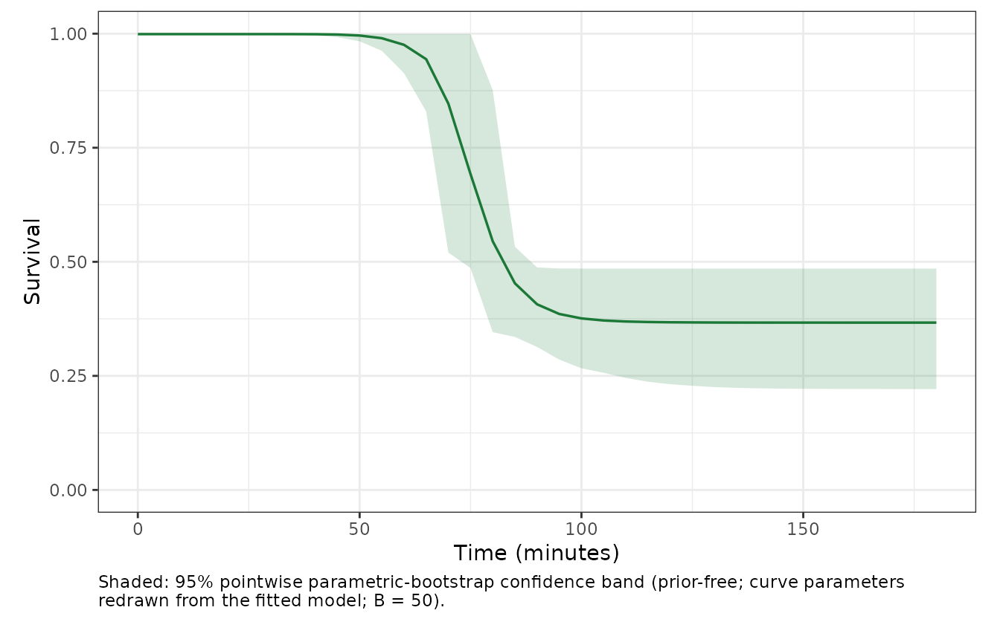

Experimental extension: deterministic heat-injury prediction
Source:vignettes/heat-injury.Rmd
heat-injury.RmdFor diploid zebrafish larvae under normoxia, how would a fitted static-assay survival curve translate into predicted survival during a hypothetical three-hour staged heat exposure? This page uses the package’s CC BY 4.0 oxygen-gradient zebrafish assay data and a clearly hypothetical exposure scenario. It is a freqTLS-only experimental extension: it does not estimate injury kinetics or a repair process.
library(freqTLS)
data("zebrafish_o2")
zebrafish_normoxia <- subset(
zebrafish_o2,
ploidy == "diploid" & oxygen == "normoxia"
)
# The assay duration, reference time, and scenario trace below are all minutes.
# `tref = 60` therefore defines CTmax at one hour.
fit <- fit_tls(
zebrafish_normoxia,
y = n_surv, n = n_total, time = duration_min, temp = temp,
family = "beta_binomial", tref = 60, quiet = TRUE
)
diagnose_tdt_fit(fit)
#> # A tibble: 1 × 9
#> converged pd_hessian max_abs_gradient gradient_pass optimizer logLik n_params
#> <lgl> <lgl> <dbl> <lgl> <chr> <dbl> <int>
#> 1 TRUE TRUE 0.0000627 TRUE nlminb -197. 6
#> # ℹ 2 more variables: AIC <dbl>, all_pass <lgl>
trace <- data.frame(
time = seq(0, 180, by = 5)
)
trace$temp <- ifelse(trace$time <= 60, 38,
ifelse(trace$time <= 120, 39, 40))The staged 38–40 °C heatwave is a user-defined scenario, not an environmental trace. Those temperatures and the 20.9–240 minute duration range occur in the static assay, but their fluctuating sequence was not observed. The trace time, fitted duration, and reference time are all minutes because heat-injury damage is accumulated per minute.
injury <- predict_heat_injury(fit, trace)
head(injury)
#> time temp dose injury survival
#> 1 0 38 0.00000000 0.000000 0.9990000
#> 2 5 38 0.06250152 6.250152 0.9990000
#> 3 10 38 0.12500304 12.500304 0.9990000
#> 4 15 38 0.18750457 18.750457 0.9990000
#> 5 20 38 0.25000609 25.000609 0.9989999
#> 6 25 38 0.31250761 31.250761 0.9989988
plot_heat_injury(fit, trace, nboot = 50, seed = 42, xlab = "Time (minutes)")
nboot = 50 keeps this vignette quick to render; use
substantially more bootstrap replicates before reporting a confidence
band.
The default one-dose survival target is the fitted relative midpoint,
defined from low and up; it is not an absolute
50% survival threshold. To inspect a separate absolute-threshold
scenario, use target_surv = 0.5 only when 0.5 is strictly
between the fitted asymptotes. That sensitivity analysis is not
CTmax.
The trajectory is a deterministic transformation of the fitted 4PL
and the user-supplied trace. heat_injury_envelope() adds
parametric-bootstrap confidence bands from refitted curves.
Variable-temperature dose additivity is an extrapolation from the static
assays, and a repair rate supplied by the user remains an illustrative
scenario: freqTLS has not fitted injury or repair parameters from
damage/recovery data. Use bayesTLS when fitted heat-injury or repair
dynamics, or Bayesian scenario propagation, is the scientific aim; its
posterior intervals are distinct from freqTLS confidence intervals.